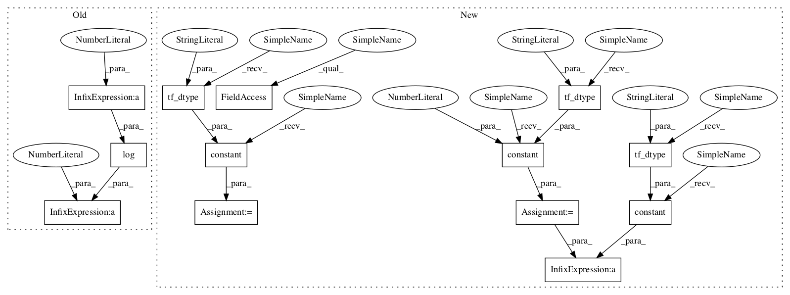

a3fe8bdf1c484e390dfe3947cc395372c0187589,tensorforce/core/distributions/gaussian.py,Gaussian,tf_log_probability,#Gaussian#Any#Any#,104

Before Change
mean, stddev, log_stddev = distr_params
sq_mean_distance = tf.square(x=(action - mean))
sq_stddev = tf.maximum(x=tf.square(x=stddev), y=util.epsilon)
return -0.5 * sq_mean_distance / sq_stddev - log_stddev - 0.5 * log(2.0 * pi)
def tf_entropy(self, distr_params):
_, _, log_stddev = distr_params
return log_stddev + 0.5 * log(2.0 * pi * e)
After Change
def tf_log_probability(self, parameters, action):
mean, stddev, log_stddev = parameters
half = tf.constant(value=0.5, dtype=util.tf_dtype(dtype="float"))
two = tf.constant(value=2.0, dtype=util.tf_dtype(dtype="float"))
epsilon = tf.constant(value=util.epsilon, dtype=util.tf_dtype(dtype="float"))
pi_const = tf.constant(value=pi, dtype=util.tf_dtype(dtype="float"))
sq_mean_distance = tf.square(x=(action - mean))
sq_stddev = tf.maximum(x=tf.square(x=stddev), y=epsilon)
return -half * sq_mean_distance / sq_stddev - log_stddev - \
half * tf.math.log(x=(two * pi_const))
def tf_entropy(self, parameters):
_, _, log_stddev = parameters
In pattern: SUPERPATTERN
Frequency: 3
Non-data size: 13
Instances
Project Name: reinforceio/tensorforce
Commit Name: a3fe8bdf1c484e390dfe3947cc395372c0187589
Time:
Author: null
File Name: tensorforce/core/distributions/gaussian.py
Class Name: Gaussian
Method Name: tf_log_probability
Project Name: reinforceio/tensorforce
Commit Name: a3fe8bdf1c484e390dfe3947cc395372c0187589
Time:
Author: null
File Name: tensorforce/core/distributions/gaussian.py
Class Name: Gaussian
Method Name: tf_entropy
Project Name: reinforceio/tensorforce
Commit Name: a3fe8bdf1c484e390dfe3947cc395372c0187589
Time:
Author: null
File Name: tensorforce/core/distributions/beta.py
Class Name: Beta
Method Name: tf_parametrize
Project Name: reinforceio/tensorforce
Commit Name: a3fe8bdf1c484e390dfe3947cc395372c0187589
Time:
Author: null
File Name: tensorforce/core/distributions/gaussian.py
Class Name: Gaussian
Method Name: tf_log_probability